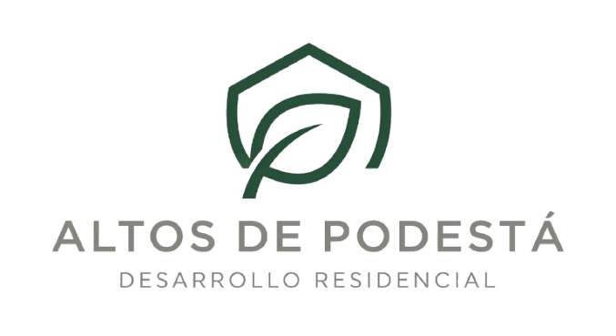
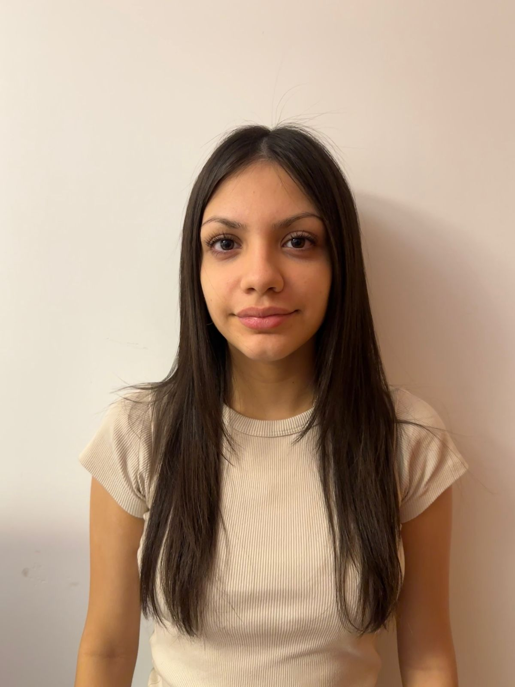
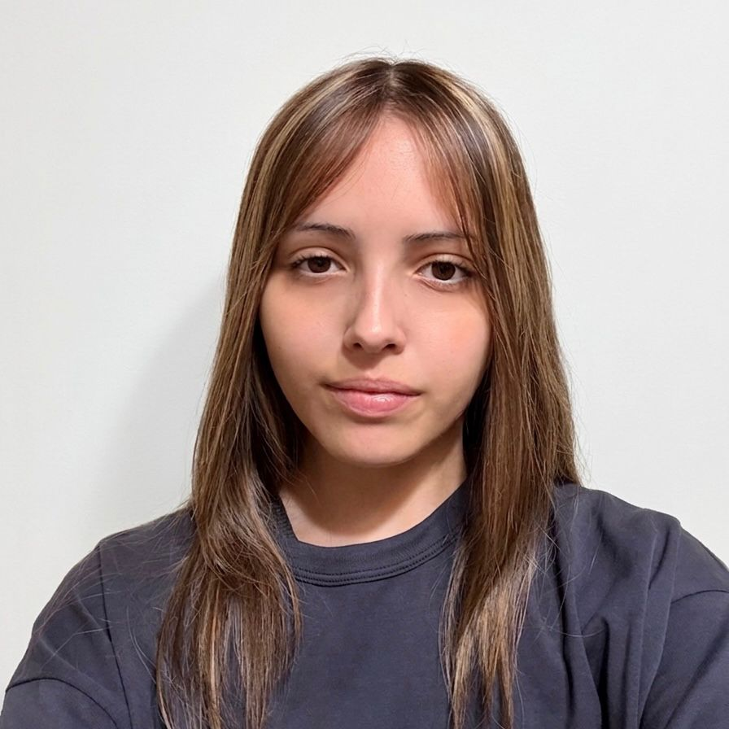
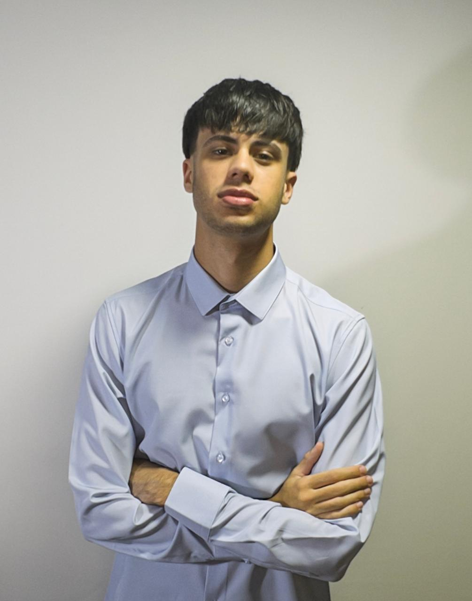

Caso 02 · Barrio Altos de Podestá
Barrio Acceso Sistema de Control de Acceso Inteligente
Diseñado para redefinir los estándares de seguridad residencial en complejos de alta gama. Este sistema integra reconocimiento inteligente de vehículos y gestión de accesos automatizada mediante una arquitectura robusta de alta disponibilidad: garantizando un flujo vehicular fluido, control absoluto de perímetros y una interfaz intuitiva para la administración integral de la comunidad.
EM
Ezequiel MorgadoCS
Camilo SpinelliSH
Sofía HermosillaVM
Violeta Martini
Instituto Leonardo Murialdo · Mayo 2026
7° Informática A
Relevamiento de campo
¿Quién tiene el problema?
Contacto Principal
Ariel Nero — Altos de Podestá
Barrio cerrado · Av. Márquez 2521, Pablo Podestá
Rol en el barrioAdministrador de la junta vecinal
ReferentesVecinos del barrio
ModalidadesInformática · Electrónica · ADO · Multimedios
Contexto del Cliente
Altos de Podestá es un barrio cerrado de Tres de Febrero, en el que los guardias de seguridad trabajan rotativamente, su trabajo es registrar manualmente cada ingreso vehicular en un cuaderno. El sistema actual genera cuellos de botella en la entrada y falta total de responsabilidad ante personas que entran al barrio sin permiso.
Base de datos
IoT
Hardware
○El usuario fue entrevistado por primera vez el día 23 de abril con una duración de 50 minutos.
○Diagnóstico de situación actual: el usuario explicó la necesidad de obtener una solución al problema de las personas que entran sin autorización previa.
"Mi mayor problema hoy es que no tengo control sobre las visitas; quiero que sean los mismos vecinos quienes validen a sus invitados mediante la App, para que la seguridad solo tenga que intervenir si detectamos algo sospechoso."
"Los días de lluvia o cuando hay ferias en la plaza, la fila de autos llega hasta la avenida porque el registro manual es lentísimo; automatizar el ingreso de los residentes nos liberaría el acceso principal en horas pico."
"Necesito que cuando ocurra un incidente, yo pueda entrar al sistema y saber exactamente qué guardia estaba de turno y qué patente dejó pasar, sin depender de si alguien se olvidó de anotar en el cuaderno."
— Ariel Nero, Administrador de la Junta Vecinal.
Diagnóstico del Problema
Lo que el cliente dice vs. lo que realmente es
| Síntoma (Lo que dice el equipo administrativo) | Causa raíz | Solución técnica |
|---|---|---|
| "En hora pico hay cola de 4 minutos" | El proceso manual toma 1–2 min por vehículo; no hay validación automática | RF01 — ALPR: verificación automática en < 5 seg |
| "No sabemos quién entró ni cuándo" | Registro en papel sin trazabilidad digital ni auditoría | RF02 — Historial digital con timestamp por cada evento |
| "El guardia deja pasar a cualquiera" | Sin protocolo definido ni lista de acceso consultable en tiempo real | RF03 — Panel del guardia: VERDE / ROJO instantáneo |
| "Los vecinos llaman al guardia para autorizar visitas" | Sin sistema de pre-autorización; propietario debe estar disponible | RF04 — QR temporal generado por el propietario vía app |
| "La barrera funciona por un botón que ya es viejo y a veces no anda" | Accionamiento mecánico manual sin integración digital | RF05 — BD local espejada en la nube con operación offline |
| "No podemos suspender un acceso al instante" | Sin gestión centralizada de estados de propietarios | RF06 — Suspensión / activación con un clic desde admin |
Línea de Base Cuantificada
Métricas actuales → objetivos
Tiempo por vehículo
40s–2m
→ objetivo: 5 seg
Trazabilidad de ingresos
0 %
→ objetivo: 100 %
Pre-autorizaciones posibles
0
→ objetivo: QR por vecino
Los tres roles del sistema
GU
Guardia
Operación en tiempo real
Input de patente · resultado VERDE/ROJO · log del día. Interfaz diseñada para uso bajo presión y baja luminosidad.
PR
Propietario
Gestión de visitas
Ver vehículos registrados · generar QR temporal · compartir por WhatsApp · historial propio.
AD
Administrador
Control total
Dashboard completo · gestión de propietarios · suspensiones en tiempo real · historial total · estadísticas.
Arquitectura del Sistema
Requerimientos funcionales
RF01
Verificación automática de patentes (ALPR)
Procesamiento y consulta en < 3 seg · resultado: VERDE (propietario activo), VERDE QR (visita válida), ROJO (suspendido/desconocido)
Alta
RF02
Historial de accesos con registro automático
Cada evento: timestamp · patente · nombre · tipo de acceso · resultado. Auditable por admin (total) y propietario (solo los propios)
Alta
RF03
Panel del guardia optimizado para uso bajo presión
Input de patente central · resultado muy visible · botón limpiar · log del día visible sin navegar · modo oscuro / alto contraste
Alta
RF04
Sistema de QR temporal para visitas
Propietario genera QR con nombre, patente, fecha y hora límite · Generación y envío automático de invitación vía WhatsApp · admin puede revocar en tiempo real
Alta
RF05
Gestión de propietarios con búsqueda en tiempo real
Registrar, activar o suspender propietarios · búsqueda por nombre, casa o patente sin recargar página
Media
RF06
Dashboard de administración con métricas del día
Accesos totales · autorizados · rechazados · propietarios activos · visitas activas · tasa de autorización
Media
RF07
Notificaciones en tiempo real al propietario (opcional)
Aviso de ingreso al propietario en tiempo real · alerta cuando su vehículo o visita ingresa al barrio
Baja
Alcance y Restricciones
Requerimientos no funcionales
RNF01HCI
Interfaz HCI optimizada: accesibilidad WCAG AA
Modo oscuro / alto contraste para operación nocturna · botones mín. 44px · fuente legible sin zoom · un elemento de acción principal por pantalla
RNF02resiliencia
Arquitectura Resiliente: Operación Local con Sincronización Remota
La base de datos local permite ingresos aunque caiga internet · sincronización automática al reconectar
RNF03performance
Respuesta de verificación en menos de 5 segundos
Desde que la cámara captura la patente hasta que se muestra el resultado en pantalla
RNF04seguridad
Aislamiento de datos por rol en servidor
El propietario solo accede a sus propios datos. El guardia no puede modificar el padrón. Control en backend, no solo en frontend
✓ El sistema HARÁ
✓Reconocimiento de patentes mediante OCR local
✓QR temporal generado por propietario
✓Historial auditable con timestamps
✓3 roles con permisos diferenciados
✓Arquitectura híbrida (Local-First)
✗ El sistema NO HARÁ (v1)
✗Reconocimiento facial biométrico
✗Integración con cámaras perimetrales
✗Control de peatones / torniquetes
✗Multi-barrio en una misma instancia
✗App nativa iOS / Android (v1)
Objetivos y Resultados Clave
Métricas de éxito: Transformando Datos en Seguridad
O1 Eliminar el cuello de botella en el ingreso
Tiempo por vehículo de 30 seg - 1 min → < 3 seg
0 filas en hora pico en los primeros 30 días
Tasa de reconocimiento ALPR ≥ 90 % en condiciones normales
O2 Trazabilidad total de accesos
100 % de los ingresos registrados automáticamente
Errores de carga manuales → 0
Historial consultable desde cualquier dispositivo en < 5 seg
O3 Gestión de visitas sin fricción
Propietario genera QR de visita en ≤ 3 pasos
Admin revoca un QR activo en 1 clic
0 llamadas al guardia para autorizar visitas en la demo
O4 Guardia opera sin capacitación previa
Tiempo de aprendizaje ≤ 20 minutos
Interfaz de alta legibilidad (Día/Noche)
Fatiga visual ≤ 2/5 (Likert) tras 4 hs de turno nocturno
O5 Viabilidad comercial demostrada
Sistema funcionando en el barrio antes de 10 diciembre
Administración valida el sistema con ≥ 4/5
Modelo de negocio: al menos 3 barrios con la misma problemática identificados
Equipo de Trabajo
Roles y responsabilidades

Ezequiel Morgado
Project Manager & Dev Backend
Planificación del GANTT, Desarrollo de la API y lógica del ESP32.

Sofía Hermosilla
Developer Frontend
Diseño del prototipo de alta fidelidad y la UX en Figma.

Camilo Spinelli
Especialista en Hardware
Diseño del esquema eléctrico, PCB e integración de sensores.

Violeta Martini
Base de Datos
Modelo de datos relacional, backups y auditoría de registros.
Colaboradores de otras modalidades

Catalina La Regina
Modalidad ADO
Marco Legal, Comercial y Relacion con el cliente

Santiago Cusato
Modalidad ADO
Gestión de Costos y Suministros (BOM & Procurement).
Santiago Villarosa
Modalidad Electrónica
Especialista en Hardware y Potencia.

Federico Sparta
Modalidad Electrónica
Especialista en Adquisición de Datos e Instrumentación

Ignacio Marticorena
Modalidad Multimedios
Especialista en Identidad Visual y Branding.
Análisis de Costos
BOM y factibilidad económica
Hardware (BOM)
Cámara$85.000
Dahua IPC-HFW1230S1P (Bullet IP 2MP)
Control$22.000
ESP32 + ENC28J60 (control de barrera)
Server$95.000
Mini-PC Usada (Servidor Local LPR)
Barrera$7.000
Relevo eléctrico para barrera existente
Gabinete$18.000
Gabinete estanco IP65 para exterior
Total BOM estimado
$227.000
Infraestructura de Red (Hosting)
TESTEO
Servidor ILM
Entorno local para validación de OCR y latencia.
PRODUCCIÓN
Hostinger / DonWeb
Despliegue externo para gestión remota 24/7.
Software stack
Frontend: HTML5 + CSS3 + JS vanilla
Backend: PHP + MySQL (XAMPP/Local)
BD: MySQL (MariaDB)
OCR: Librería Local (Tesseract / OpenALPR)
Equipo y Valor Hora
EM
Ezequiel Morgado
Project Manager
$22.720
EM
Ezequiel Morgado
Backend
$22.720
SH
Sofia Hermosilla
Frontend
$17.750
CS
Camilo Spinelli
Hardware
$24.140
VM
Violeta Martini
Data & DB
$22.720
Planificación del Proyecto
Roadmap Abril — Junio
Abril 2026
Finalizado
Relevamiento, selección de hardware y arquitectura de datos
Relevamiento de necesidades en Altos de Podestá y entrevista con la administración.
Selección y presupuestación de hardware: Cámara IP Dahua 2MP (Serie Entry) y controladores ESP32.
Definición de arquitectura de base de datos relacional para auditoría e ingresos.
Mayo 2026
Estado actual
Motor OCR, integración de Backend, integración de sistemas y pruebas de laboratorio
Implementación de OCR Local (OpenALPR / Tesseract) en Mini-PC.
Integración de lógica de Backend y creación de APIs para la comunicación Backend-ESP32 para control de barrera.
Pruebas de conectividad local y sincronización de base de datos espejada (Modo Offline).
Junio 2026
Objetivo
Roles en la App, dashboard de administración y entrega del prototipo V1
Implementación de jerarquía de roles en la App (Residente / Seguridad / Admin).
Dashboard web de administración con historial de logs exportable.
Pruebas de estrés y validación en entorno real (Altos de Podestá).
Pendientes Inmediatos
Qué hacemos ahora
01
Acuerdo de Implementación con la Administración
Presentar la demo funcional con el objetivo de obtener la conformidad final sobre el plan de trabajo y coordinar los tiempos de instalación del hardware en el acceso principal.
02
Adquisición y Testing de Equipamiento Crítico
Proceder con la compra de la cámara Dahua, la Mini-PC y el controlador ESP32 según el presupuesto estimado. Se realizarán pruebas de laboratorio previas para asegurar que todo el hardware interactúe correctamente antes de llevarlo a la guardia.
03
Estandarización de Desarrollo y Control de Versiones
Consolidar el repositorio central en GitHub con acceso para todo el equipo. Esto permitirá un flujo de trabajo organizado por ramas (backend/frontend/hardware) para asegurar la integridad del código en cada avance.
04
Gestión de Calidad y Seguimiento de Hitos
Establecer una rutina de seguimiento semanal para auditar el cumplimiento de cada rol. El objetivo es garantizar que no se avance al siguiente hito técnico sin haber cerrado y validado el anterior, asegurando la robustez del sistema final.
Por decisión del equipo el sistema completo debe estar validado por la administración del barrio antes de instalar cualquier tipo de hardware.
Barrio Acceso · Altos de Podestá · Caso 2
Gracias
Preguntas y consultas
Instituto Leonardo Murialdo · 7mo Informática A · Mayo 2026